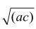
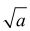
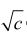

费拉里求解一元四次方程的方法
对四次方程
x4 + ax3 + bx2 + cx + d = 0 （4-1）
做变换x = u-a/4， 得到：
（u-a/4）4+a（u-a/4）3+b（u-a/4）2+c（u-a/4）+d=0
展开以后，合并同类项，得到：
u4+(-3a2/8+b)u2 + （a3/8-ab/2+c)u+(-3a4/256+a2b/16-ac/4+d)=0（4-2）
令
A =-3a2/8 + b
B =a3/8 -ab/2 + c
C =3a4/256+a2b/16-ac/4+ d
方程（4-2）变成
u4 + Au2+Bu+C=0 （4-3）
这是一个不完全四次方程。如果B = 0， 那么做变换w = u2，（4-3）就变成一个w的二次方程，很容易求解。
如果 C = 0，那么，u有一个零解，剩下的三个解对应于一个三次方程
u3 + Au + B = 0
对这种方程我们已经知道如何处理了。
对于B和C都不为零的情况，费拉里提出下面这个求解方法：
首先，利用恒等式（还记得巴比伦人的二阶二项式展开吗？）
（u2+ A）2-u4-2Au2 = A2
把（4-3）变成：
（u2+ A）2 + Bu + C = Au2 +A2 （4-4）
现在引入一个新的任意变量y，注意到下面这个等式永远成立：
（u2 + A + y）2-（u2 + A）2 = 2y（u2 + A） + y2 = 2yu2 + 2yA +y2
而且
0 = （A+ 2y）u2-2yu2-Au2
我们得到：
（u2+ A + y）2-（u2 + A）2 = （A + 2y）u2-Au2 + 2yA + y2
把这个恒等式的两边分别加到（4-4）的两边，得到：
（u2+ A + y）2 + Bu + C = （A + 2y）u2 + （2yA + y2 + A2）
化简以后，得到：
（u2+ A + y）2 = （A + 2y）u2 –Bu + （y2 + 2yA + A2 –C）（4-5）
我们看到，等式的左边是[（u2 + A + y）2]的完整平方。假如我们能把等式的右端也变成一个完整平方的形式，问题就解决了。注意对于任何一个二阶多项式
ax2 + bx + c
如果它能被写成（mx + n）2的形式，那么其系数a，b，c之间必须满足下面的关系：
b2-4 ac =0 （4-6）
也就是说，b = 2

，m=
， n =
。对于（4-5）等号的右端来说，类似于（4-6）的关系是：
（-B）2-4（2y + A）（y2 + 2yA + A2 –C） = 0
这个等式化简以后，变成
2 y3 + 5ay2 + （4A2-2C）y + （A3 –AC –） =0
这是一个一元三次方程，我们已经知道如何求解。把解出的y代入（4-5），它的右端就变成了u与y以及一些数值的完整平方。这样（4-5）就可以解决了。